見積り管理
検索ページ
見積りの検索・新規作成・実績集計を行う画面です。
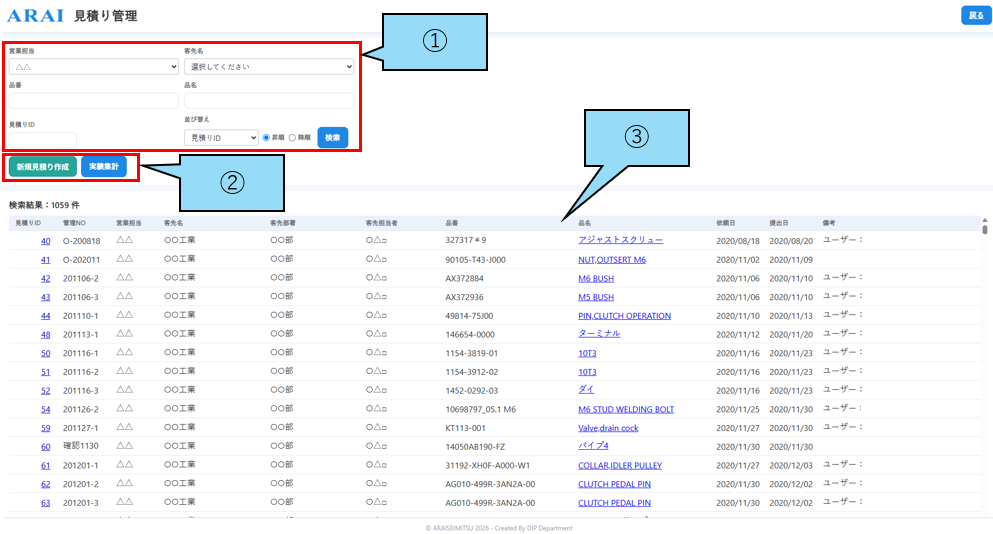
①検索欄
条件を指定して「検索」を押すと、下の一覧に結果が表示されます。
営業担当・客先名・品番・品名・見積りIDのいずれかは入力が必要です。
| 項目 | 内容 |
|---|---|
| 営業担当 | マスタから営業担当を選択して絞り込む |
| 客先名 | マスタから客先を選択して絞り込む |
| 品番 | 品番の一部でも検索可能（部分一致） |
| 品名 | 品名の一部でも検索可能（部分一致） |
| 見積りID | 見積りIDで絞り込む |
| 並び替え | 結果の並び順にする列を選択。昇順／降順を指定できる |
| 検索 | 入力した条件で見積りを検索し、一覧を更新する |
②新規見積り作成・実績集計ボタン
| ボタン | 内容 |
|---|---|
| 新規見積り作成 | 新規登録ウィンドウを開く（詳細は新規見積り作成） |
| 実績集計 | 実績集計画面へ移動する（詳細は実績集計） |
③データ表示
検索結果の件数と一覧テーブルを表示します。
| 項目 | 内容 |
|---|---|
| 検索結果 | 件数を表示する |
| 見積りID | クリックで編集ウィンドウを開き、内容の変更・削除ができる |
| 品名 | クリックで見積り計算画面へ移動する（詳細は見積り計算） |
| その他の列 | 管理NO・営業担当・客先名・客先部署・客先担当者・品番・依頼日・提出日・備考を表示 |
| 備考 | 一覧では先頭行のみ表示。マウスを乗せると全文を確認できる |
新規見積り作成
「新規見積り作成」押下で表示される登録ウィンドウです。
見積りIDをクリックした編集時も同じ入力欄を使います（ボタンは「変更」「削除」になります）。
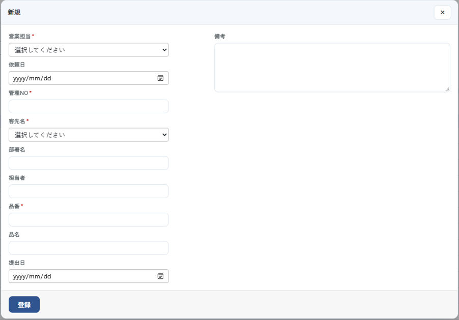
* が付いている項目は必須です。
| 項目 | 内容 |
|---|---|
| 営業担当 * | マスタから営業担当を選択 |
| 依頼日 | 依頼日を入力（カレンダーから選択可） |
| 管理NO * | 管理NOを入力 |
| 客先名 * | マスタから客先を選択 |
| 部署名 | 客先の部署名を入力 |
| 担当者 | 客先の担当者名を入力 |
| 品番 * | 品番を入力 |
| 品名 | 品名を入力 |
| 提出日 | 提出日を入力（カレンダーから選択可） |
| 備考 | 補足事項を自由に入力 |
| ボタン | 内容 |
|---|---|
| 登録 | 入力内容で新規見積りを登録する（新規時） |
| 変更 | 入力内容で既存見積りを更新する（編集時） |
| 削除 | 対象の見積りを削除する（編集時） |
| × | ウィンドウを閉じる |
実績集計
提出日の期間を指定し、営業担当ごとの件数を集計する画面です。
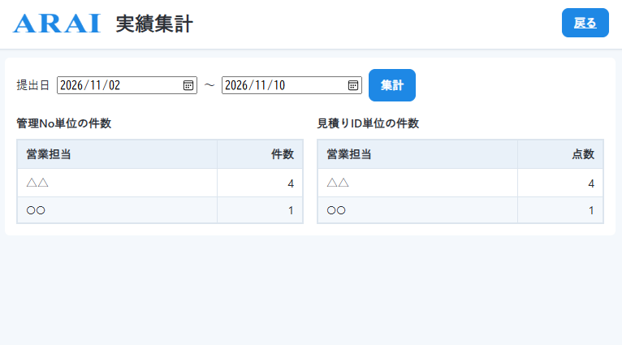
| 項目 | 内容 |
|---|---|
| 提出日（開始） | 集計対象の提出日の開始日 |
| 提出日（終了） | 集計対象の提出日の終了日 |
| 集計 | 指定した提出日の範囲で集計を実行する（開始・終了の両方の入力が必要） |
集計結果
| 表示 | 内容 |
|---|---|
| 管理No単位の件数 | 営業担当ごとの件数（管理NO単位） |
| 見積りID単位の件数 | 営業担当ごとの点数（見積りID単位） |
見積り計算
検索結果の品名をクリックして開く、見積りの計算・登録画面です。
上部に基本情報、その下に「材料費・加工費」「梱包輸送費・表面処理・初期費用」「備考」のタブがあります。
基本情報
検索画面で登録した見積りの内容を表示します（編集不可）。
| 項目 | 内容 |
|---|---|
| 品番 | 見積りの品番 |
| 品名 | 見積りの品名 |
| 客先名 | 客先名 |
| 部署名 | 客先の部署名 |
| 担当者 | 客先の担当者 |
| 客先コード | 客先マスタのコード |
| 見積りID | 対象の見積りID |
| 営業担当名 | 営業担当名 |
| 見積書作成 | 見積書を作成する（詳細は見積書） |
材料費
「材料費・加工費」タブ内の材料費入力です。灰色の欄は自動計算・表示専用です。
| 項目 | 内容 |
|---|---|
| 材質 径 | 材質径を入力 |
| 材種 | 材種マスタから選択（比重などが連動） |
| 形状 | φ / Hex / □ を選択 |
| 径・長さ・全長・突切り | 寸法を入力 |
| 取り数 | 自動計算された取り数（表示専用） |
| 取り数入力 | 取り数を手入力で指定する場合に使用 |
| 比重・一本重・一個重 | 自動計算（表示専用） |
| 材料単価 | 材料の単価を入力 |
| 材料費 | 自動計算された材料費（表示専用） |
| 歩留り(%)・歩留り金額 | 歩留りを入力、金額は自動計算 |
| 材料費合計 | 自動計算された合計（表示専用） |
| 材料費（右側・黄） | 登録に使う材料費。必要に応じて手入力で上書き |
| 材料費登録状況 | 未／済など、材料費の登録状態を表示 |
| 登録 | 材料費（および有効時は真鍮詳細）を登録する |
| 削除 | 登録済みの材料費を削除する |
真鍮詳細
真鍮材料を使う場合に「有効化」をオンにします。オフ時は入力不可です。
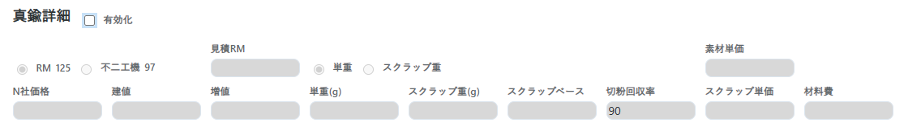
| 項目 | 内容 |
|---|---|
| 有効化 | チェックで真鍮詳細を使用。外すと入力欄が無効になり関連値をクリア |
| RM / 不二工機 | RM区分を選択（各値はマスタから表示） |
| 見積RM | 選択に応じた見積RM（表示） |
| 単重 / スクラップ重 | 重量計算の区分を選択 |
| 素材単価 | 算出された素材単価（表示） |
| N社価格 | N社価格を入力 |
| 建値・増値 | 建値・増値（連動表示／入力） |
| 単重(g)・スクラップ重(g) | 重量を入力／表示 |
| スクラップベース | スクラップベースを入力 |
| 切粉回収率 | 切粉回収率を入力（初期値 90） |
| スクラップ単価・材料費 | 算出結果を表示 |
加工費・管理費
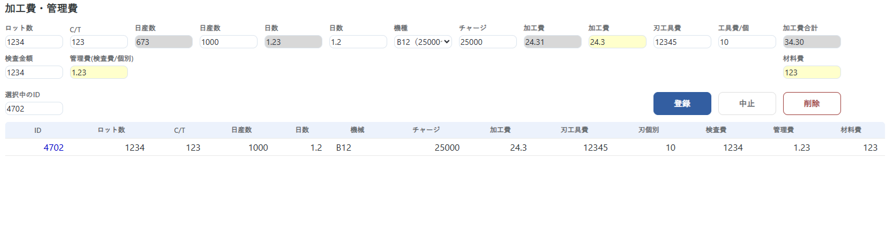
ロットごとの加工費・管理費を入力し、一覧に登録します。一覧のIDをクリックすると編集できます。
| 項目 | 内容 |
|---|---|
| ロット数 | ロット数を入力 |
| C/T | サイクルタイムを入力 |
| 日産数（左） | 自動計算（表示専用） |
| 日産数（右） | 日産数を手入力で指定する場合に使用 |
| 日数（左） | 自動計算（表示専用） |
| 日数（右） | 日数を手入力で補正する場合に使用 |
| 機種 | 機種を選択（チャージが連動） |
| チャージ | チャージを入力／表示 |
| 加工費（左） | 自動計算（表示専用） |
| 加工費（右・黄） | 登録に使う加工費。必要に応じて手入力 |
| 刃工具費・工具費/個 | 刃工具関連の費用を入力 |
| 加工費合計 | 自動計算された合計（表示専用） |
| 検査金額 | 検査金額を入力 |
| 管理費(検査費/個別) | 管理費を入力 |
| 材料費 | 材料費タブの材料費が反映される（必要に応じて変更可） |
| 選択中のID | 編集中の加工費行ID（表示専用） |
| 登録 | 入力内容を登録／更新する |
| 中止 | 編集中の選択を解除し入力をクリアする |
| 削除 | 選択中の加工費行を削除する |
| 一覧テーブル | 登録済みの加工費一覧。IDクリックで編集 |
梱包輸送費・表面処理・初期費用・諸条件
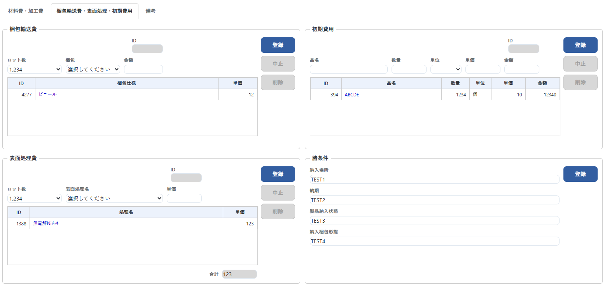
「梱包輸送費・表面処理・初期費用」タブ内の各パネルです。登録／中止／削除の操作は材料費・加工費と同様です。
梱包輸送費
| 項目 | 内容 |
|---|---|
| ロット数 | 対象ロット（加工費で登録したロット）を選択 |
| 梱包 | (未指定)／ビニール／トレー を選択 |
| 金額 | 単価（金額）を入力（小数第2位まで） |
| 一覧 | 梱包仕様をクリックすると編集。列は ID・梱包仕様・単価 |
初期費用
| 項目 | 内容 |
|---|---|
| 品名・数量・単位・単価 | 初期費用の内容を入力（単位は 個／式／セット） |
| 金額 | 数量×単価で自動計算。手入力も可 |
| 一覧 | 品名をクリックすると編集 |
表面処理費
| 項目 | 内容 |
|---|---|
| ロット数 | 対象ロットを選択 |
| 表面処理名 | マスタから選択 |
| 単価 | 単価を入力（小数第2位まで） |
| 合計 | 選択ロットの表面処理費合計 |
| 一覧 | 処理名をクリックすると編集 |
諸条件
| 項目 | 内容 |
|---|---|
| 納入場所 | 納入場所を入力 |
| 納期 | 納期を入力 |
| 製品納入状態 | 製品の納入状態を入力 |
| 納入梱包形態 | 納入時の梱包形態を入力 |
| 登録 | 諸条件を保存する |
備考
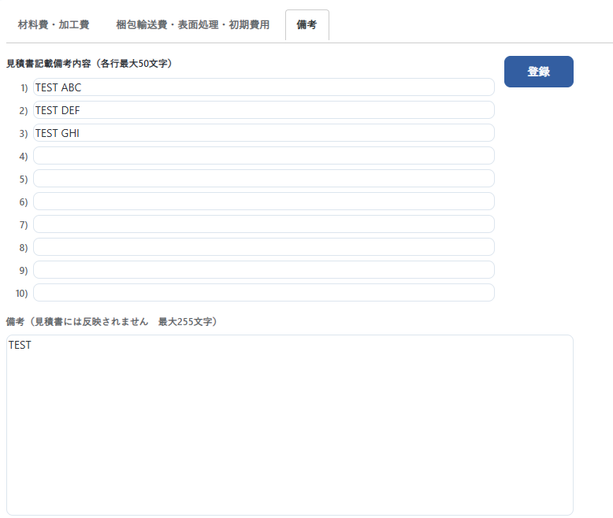
| 項目 | 内容 |
|---|---|
| 見積書記載備考内容 | 見積書に載せる備考。1〜10行、各行最大50文字 |
| 備考 | 社内用メモ。見積書には反映されない（最大255文字） |
| 登録 | 備考内容を保存する |
見積書
基本情報の「見積書作成」ボタンから、Excel見積書を出力します。
ボタン押下後の流れ
- 材料費（右側の材料費）と加工費が登録されているかを確認する
- 不足がある場合はエラーを表示して中断する
- 材料費に入力がありません
- 加工費が入力されていません
- 見積りが選択されていません
- 確認ダイアログ「見積書を作成しますか？」で「はい」を選ぶ
- 保存先を指定し、Excelファイルを保存する（ファイル名例：見積書_客先名見積りID.xlsx）
- 同じ名前のExcelが開いている場合は保存に失敗する
出力例
左が Sheet1（お客様向け）、右が Sheet2（社内用・原価情報あり）です。
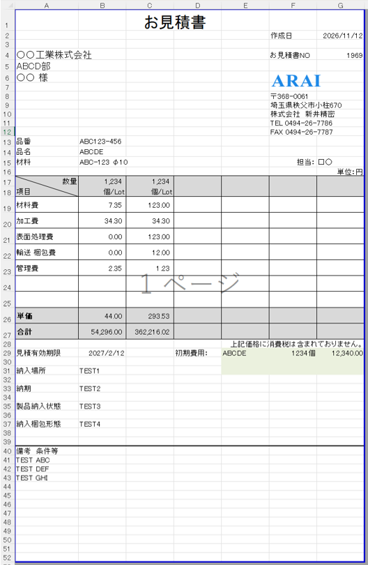
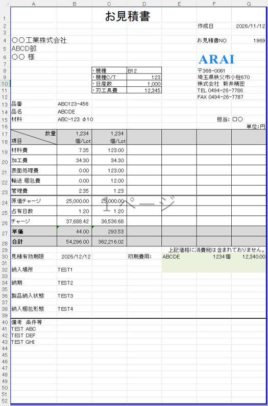
表題部（Sheet1 / Sheet2 共通）
| セル | 反映内容 |
|---|---|
| A4 | 客先名 |
| A5 | 部署名 |
| A6 | 担当者 ＋「 様」 |
| G2 | 作成日（出力日 yyyy/mm/dd） |
| G4 | お見積書NO（見積りID） |
| B13 | 品番 |
| B14 | 品名 |
| B15 | 材料（材質 径） |
| G15 | 担当（営業担当名） |
見積有効期限
| シート | セル | 反映内容 |
|---|---|---|
| Sheet1 | B29 | 出力日から3か月後 |
| Sheet2 | B30 | 出力日から1か月後 |
Sheet2のみ：先頭ロットの機械情報
| セル | 反映内容 |
|---|---|
| D8 | 機種（先頭ロット） |
| D9 | C/T（サイクルタイム） |
| D10 | 日産数 |
| D11 | 刃工具費 |
ロット別の見積り詳細
加工費の登録順に、B列から右へ1列ずつ書き込みます。
| 行 | 反映内容 | 備考 |
|---|---|---|
| 17 | ロット数（数量） | Sheet1 / Sheet2 |
| 19 | 材料費 | Sheet1 / Sheet2 |
| 20 | 加工費 | 加工費 ＋ 工具費/個 |
| 21 | 表面処理費 | 対象ロットの表面処理費合計 |
| 22 | 輸送梱包費 | 対象ロットの梱包輸送費合計 |
| 23 | 管理費 | Sheet1 / Sheet2 |
| 24 | 原価チャージ | Sheet2のみ（チャージ） |
| 25 | 占有日数 | Sheet2のみ（日数） |
単価・合計・チャージ金額などはテンプレート側の計算式で算出されます。
初期費用
0件の場合は「無し」を書き込みます。1件以上は下方向へ追記します。
| 列 | 反映内容 | 開始位置 |
|---|---|---|
| E | 品名 | Sheet1: E29／Sheet2: E30（0件時は「無し」） |
| F | 数量＋単位（例：1234個） | 同上から下方向 |
| G | 金額 | 同上から下方向 |
諸条件
| 項目 | Sheet1 | Sheet2 |
|---|---|---|
| 納入場所 | B31 | B32 |
| 納期 | B33 | B34 |
| 製品納入状態 | B35 | B36 |
| 納入梱包形態 | B37 | B38 |
備考（見積書記載備考内容）
Sheet1 / Sheet2 とも A41 から下方向へ、1〜10行を書き込みます。
原価見積り管理
検索ページ
原価見積りの検索・新規作成・集計を行う画面です。
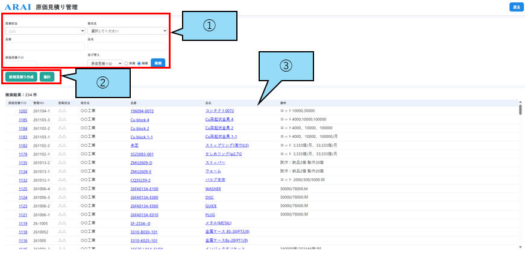
①検索欄
条件を指定して「検索」を押すと、下の一覧に結果が表示されます。
営業担当・客先名・品番・品名・原価見積りIDのいずれかは入力が必要です。
| 項目 | 内容 |
|---|---|
| 営業担当 | マスタから営業担当を選択して絞り込む |
| 客先名 | マスタから客先を選択して絞り込む |
| 品番 | 品番の一部でも検索可能（部分一致） |
| 品名 | 品名の一部でも検索可能（部分一致） |
| 原価見積りID | 原価見積りIDで絞り込む |
| 並び替え | 結果の並び順にする列を選択。昇順／降順を指定できる |
| 検索 | 入力した条件で原価見積りを検索し、一覧を更新する |
②新規見積り作成・集計ボタン
| ボタン | 内容 |
|---|---|
| 新規見積り作成 | 新規登録ウィンドウを開く（詳細は新規見積り作成） |
| 集計 | 粗利率集計のエクスポートウィンドウを開く（詳細は集計） |
③データ表示
検索結果の件数と一覧テーブルを表示します。
| 項目 | 内容 |
|---|---|
| 検索結果 | 件数を表示する |
| 原価見積りID | クリックで編集ウィンドウを開き、内容の変更・削除ができる |
| 品番・品名 | クリックで原価見積り計算画面へ移動する（詳細は原価見積り計算） |
| その他の列 | 管理NO・営業担当・客先名・備考を表示 |
| 備考 | 一覧では先頭行のみ表示。マウスを乗せると全文を確認できる |
新規見積り作成
「新規見積り作成」押下で表示される登録ウィンドウです。
原価見積りIDをクリックした編集時も同じ入力欄を使います（ボタンは「変更」「削除」になります）。
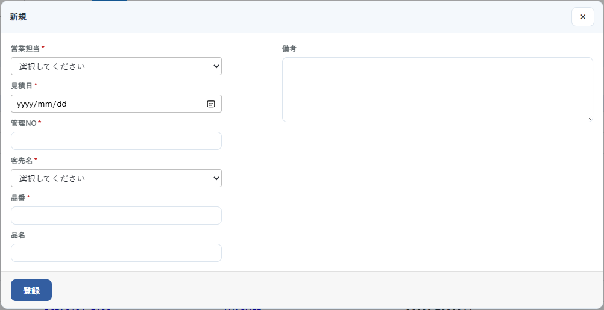
* が付いている項目は必須です。
| 項目 | 内容 |
|---|---|
| 営業担当 * | マスタから営業担当を選択 |
| 見積日 * | 見積日を入力（カレンダーから選択可） |
| 管理NO * | 管理NOを入力 |
| 客先名 * | マスタから客先を選択 |
| 品番 * | 品番を入力 |
| 品名 | 品名を入力 |
| 備考 | 補足事項を自由に入力 |
| ボタン | 内容 |
|---|---|
| 登録 | 入力内容で新規原価見積りを登録する（新規時） |
| 変更 | 入力内容で既存データを更新する（編集時） |
| 削除 | 対象の原価見積りを削除する（編集時） |
| × | ウィンドウを閉じる |
集計
「集計」押下で表示されるウィンドウです。条件を指定して粗利率集計のExcelを出力します。
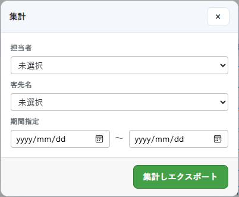
| 項目 | 内容 |
|---|---|
| 担当者 | 営業担当で絞り込む（未選択可） |
| 客先名 | 客先で絞り込む（未選択可） |
| 期間指定 | 見積日の開始～終了を指定 |
| 集計しエクスポート | 確認後、粗利率集計のExcelを保存する |
出力例
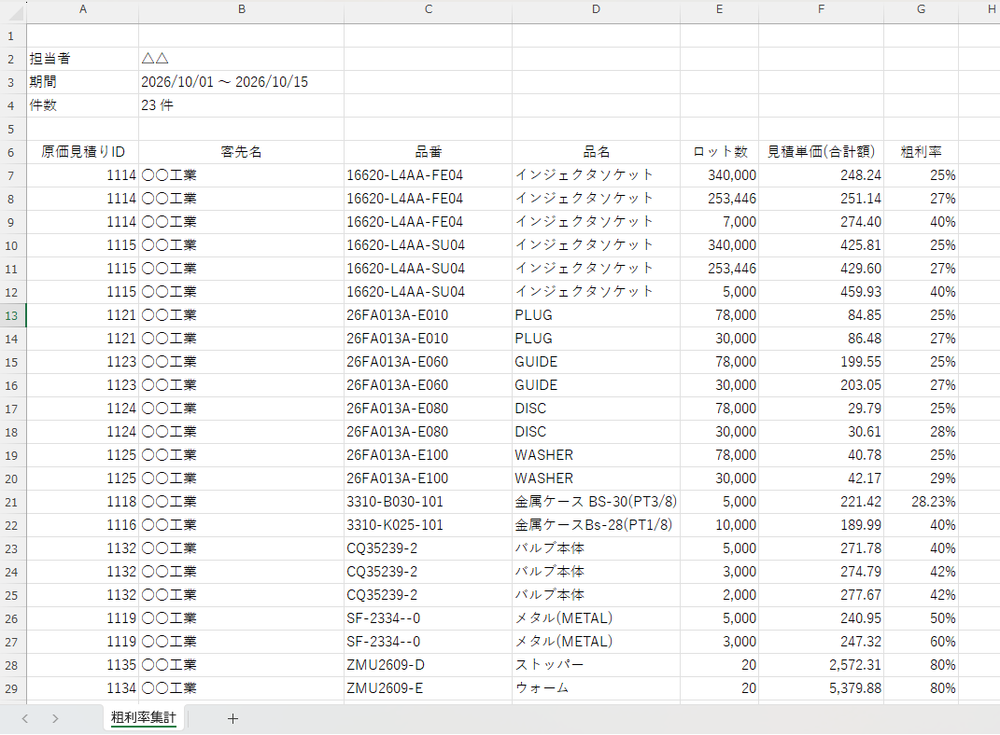
| 内容 | 説明 |
|---|---|
| ヘッダー | 担当者・期間・件数を表示 |
| 一覧列 | 原価見積りID・客先名・品番・品名・ロット数・見積単価(合計額)・粗利率 |
| シート名 | 粗利率集計 |
原価見積り計算
検索結果の品番または品名をクリックして開く、原価見積りの計算・保存画面です。
右側に単価計算等のパネルがあります。
基本情報
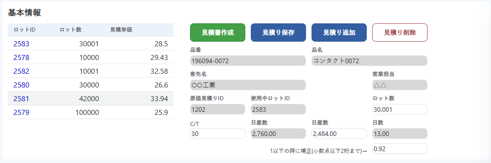
左側にロット一覧、右側に基本情報と操作ボタンがあります。ロットIDをクリックすると、そのロットを編集対象に切り替えます。
| 項目 | 内容 |
|---|---|
| ロット一覧 | ロットID・ロット数・見積単価を表示。選択中の行が強調される |
| 見積書作成 | 原価見積書を作成する（詳細は原価見積書） |
| 見積り保存 | 画面の入力内容を保存する |
| 見積り追加 | 新しいロットを追加する |
| 見積り削除 | 選択中のロットを削除する |
| 品番・品名・客先名・営業担当・原価見積りID・使用中ロットID | 表示専用 |
| ロット数・C/T・日産数（右）・補正 | 入力・補正用。日産数（左）・日数は自動計算 |
材料費
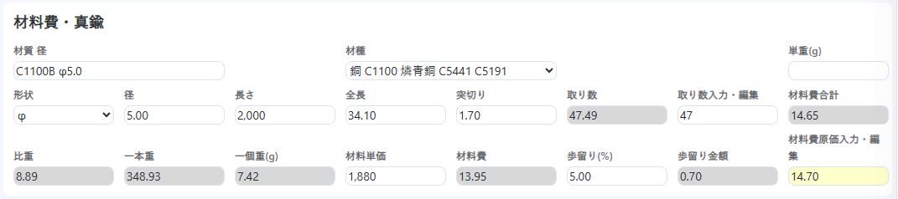
材質・寸法・単価などから材料費を算出します。灰色の欄は自動計算・表示専用です。
| 項目 | 内容 |
|---|---|
| 材質 径・材種・形状 | 材料の種類と形状を指定 |
| 径・長さ・全長・突切り・取り数 | 寸法と取り数を入力／算出 |
| 比重・一本重・一個重 | 自動計算（表示専用） |
| 材料単価・歩留り(%)・材料費合計 | 単価・歩留りを入力し、材料費を算出 |
真鍮詳細
真鍮材料を使う場合に「有効化」をオンにします。オフ時は入力不可です。
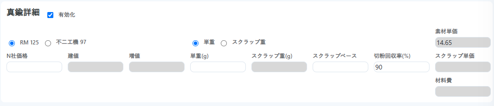
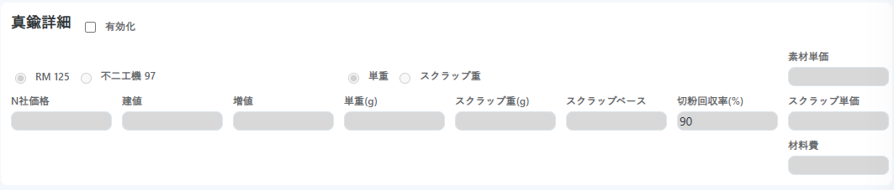
| 項目 | 内容 |
|---|---|
| 有効化 | チェックで真鍮詳細を使用。外すと入力欄が無効になる |
| RM / 不二工機 | RM区分を選択 |
| 単重 / スクラップ重 | 重量計算の区分を選択 |
| N社価格・建値・増値・単重・スクラップ関連 | 真鍮材料費の算出に使用 |
加工費・管理費
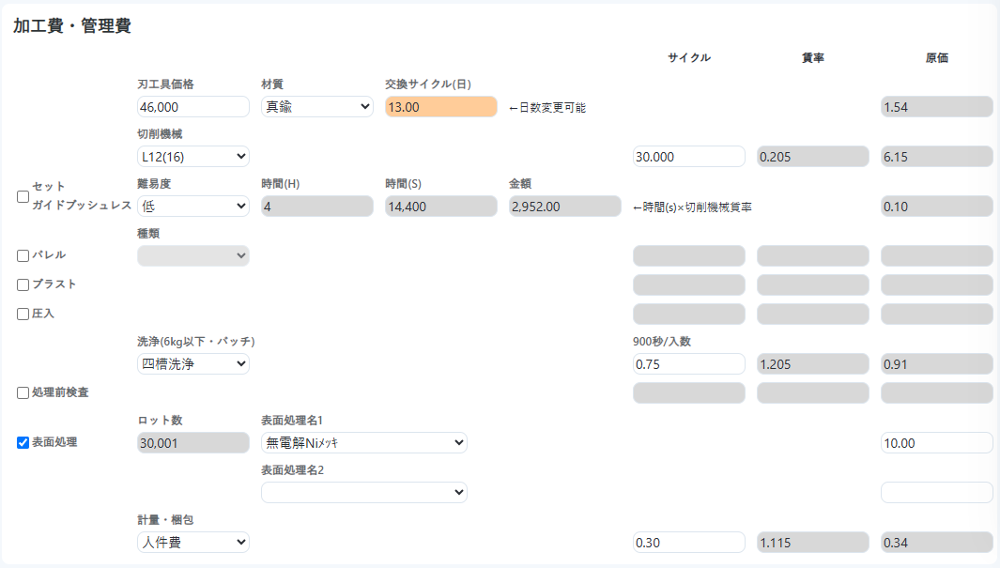
機種・チャージ・加工時間・工具費・管理費などを入力し、加工費を算出します。
チェックを入れた工程のみ計算対象になります。
| 項目 | 内容 |
|---|---|
| 機種・チャージ | 使用機種とチャージを指定 |
| 工程チェック | 対象工程を有効化する |
| 加工時間・賃率・原価など | 工程ごとの加工費・管理費の入力／算出 |
検査
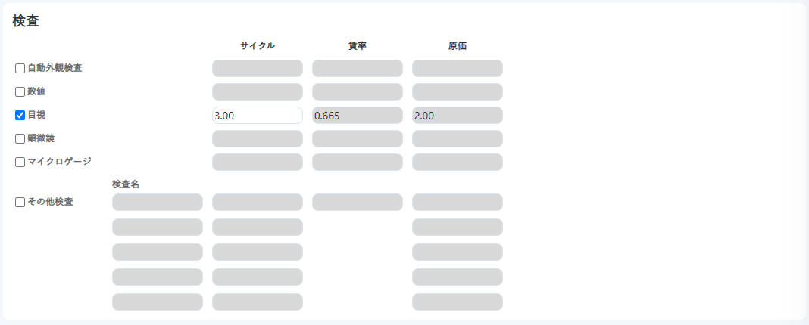
検査工程ごとのサイクル・賃率・原価を入力します。チェックを外した項目は計算対象外です。
| 項目 | 内容 |
|---|---|
| 自動外観検査／数値／目視／顕微鏡 など | 各検査の有効化とサイクル・賃率・原価 |
送料・梱包
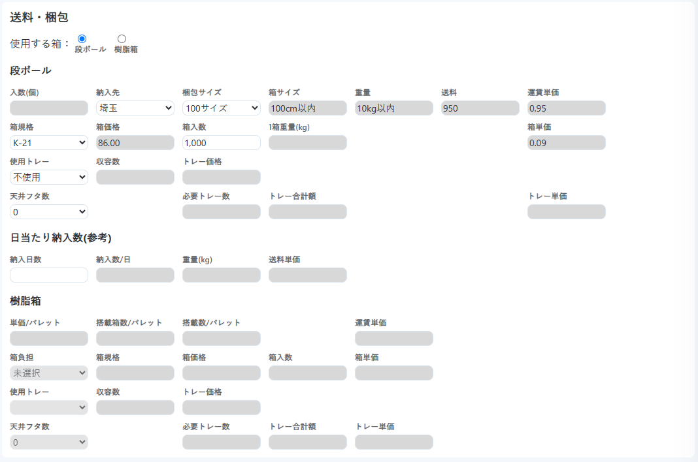
使用する箱を「段ボール」または「樹脂箱」から選択します。
※掲載画像は「段ボール」選択時の画面です。選択していない側の入力欄は無効になります。
| 項目 | 内容 |
|---|---|
| 使用する箱 | 段ボール／樹脂箱を選択 |
| 入数・納入先・梱包サイズ | 送料算出の条件を指定 |
| 箱サイズ・重量・送料・運賃単価 | 条件に応じて表示／算出 |
| 箱規格・箱価格・箱入数・箱単価 | 箱費用を指定／算出 |
| 使用トレー・収容数・トレー価格など | トレー使用時の費用を指定／算出 |
| 日当たり納入数（参考） | 納入日数などから参考単価を算出 |
初期費用
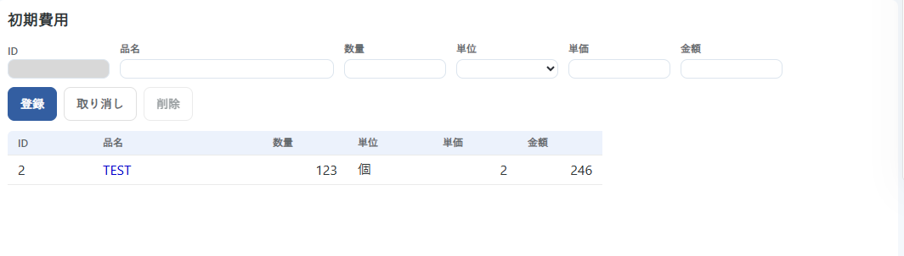
初期費用を一覧に登録します。品名をクリックすると編集できます。
| 項目 | 内容 |
|---|---|
| 品名・数量・単位・単価 | 初期費用の内容を入力（単位は 個／式／セット） |
| 金額 | 数量×単価で自動計算。手入力も可 |
| 登録／取り消し／削除 | 行の登録・編集取消・削除 |
単価計算等
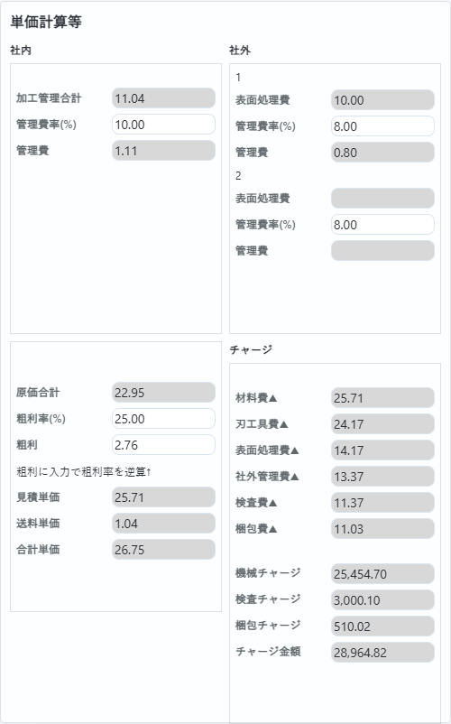
画面右側のパネルです。社内／社外の管理費、見積単価、チャージなどを確認・調整します。
| 区分 | 内容 |
|---|---|
| 社内 | 加工管理合計・管理費率・管理費 |
| 社外 | 表面処理費と管理費（1／2） |
| 単価 | 原価合計・粗利率・粗利・見積単価・送料単価・合計単価 |
| チャージ | 材料費▲・刃工具費▲・表面処理費▲・検査費▲・梱包費▲・各チャージ・チャージ金額 |
粗利に入力すると粗利率を逆算できます。
原価見積書
基本情報の「見積書作成」ボタンから、Excel原価見積書を出力します。
ボタン押下後の流れ
- 原価見積りIDが選択されているかを確認する（未選択時は「見積りが選択されていません」）
- 確認ダイアログ「原価見積書への出力前に内容を保存しますか？」で選択する
- はい … 画面内容を保存してから出力する
- いいえ … 保存せずに出力する
- キャンセル … 中断する
- 保存先を指定し、Excelファイルを保存する（ファイル名例：原価見積書_客先名_原価見積りID_ロットID.xlsx）
- 同じ名前のExcelが開いている場合は保存に失敗する
出力例
「原価見積りシート」に、現在編集中ロットの原価内訳を書き込みます。あわせて「比較表」シートにも値が入ります。
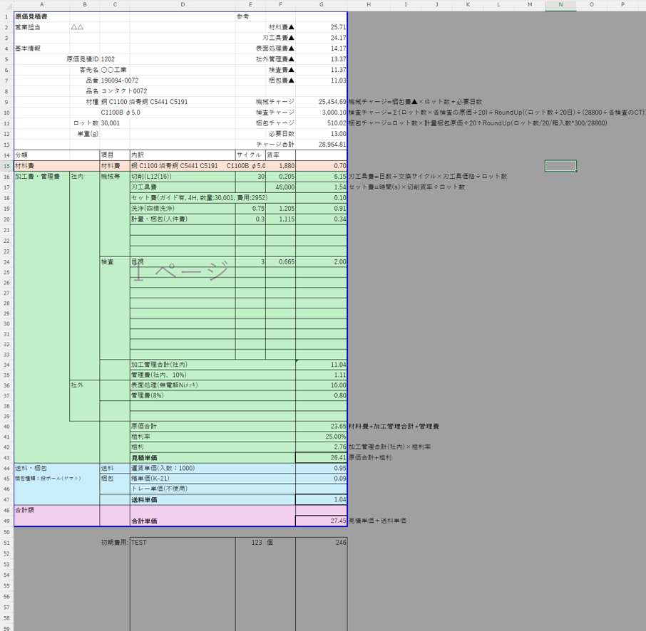
表題部（原価見積りシート）
| セル | 反映内容 |
|---|---|
| B2 | 営業担当 |
| C5 | 原価見積りID |
| C6 | 客先名 |
| C7 | 品番 |
| C8 | 品名 |
| C9 | 材種 |
| C10 | 材質 径 |
| C11 | ロット数 |
| C12 | 単重(g) |
| G10 | 検査チャージ |
| G11 | 梱包チャージ |
| G12 | 日数（必要日数） |
材料費
| セル | 反映内容 |
|---|---|
| D15 | 材種 ＋ 材質 径 |
| F15 | 材料単価 |
| G15 | 材料費（材料費原価入力・編集） |
加工費・管理費（D16〜G23）
チェック状態に応じて最大8行を上から書き込みます。各行は D＝項目名／E＝サイクル／F＝賃率／G＝原価 です。
| 項目名の例 | 条件 |
|---|---|
| 切削（機種名） | 常に出力 |
| 刃工具費 | 常に出力 |
| セット費（ガイド有／無・時間・数量・費用） | 常に出力 |
| バレル／ブラスト／圧入 | 各工程チェックON時のみ |
| 洗浄（設備名）／計量・梱包（設備名） | 常に出力 |
検査（D24〜G33）
チェックONの検査のみ、最大10行を書き込みます（処理前検査・自動外観・数値・目視・顕微鏡・マイクロゲージ・その他）。
D34／G34 はテンプレートの合計行のため変更しません。
管理費・表面処理
| セル | 反映内容 |
|---|---|
| D35 | 管理費(社内、管理費率%) |
| G35 | 社内管理費（テンプレート計算式） |
| D36〜 | 表面処理（処理名）と管理費（社外管理費率%）。最大2件分を交互に出力 |
| G36〜 | 表面処理原価／社外管理費（計算式） |
| G41 | 粗利率（小数で書き込み。画面の%を100で割った値） |
原価合計・粗利・見積単価・送料単価・合計単価などはテンプレート側の計算式で算出されます。
送料・梱包
| 使用する箱 | セル | 反映内容 |
|---|---|---|
| 段ボール | D44 / G44 | 運賃単価（入数付き）／金額 |
| A45 | 梱包種類：段ボール(ヤマト) | |
| D45 / G45 | 箱単価（規格名）／金額 | |
| D46 / G46 | トレー単価（使用時）／金額 | |
| 樹脂箱 | D44 / G44 | 運賃単価（入数付き）／金額 |
| A45 | 梱包種類：パレット | |
| D45 / G45 | 箱単価（自達時は規格名、箱支給時は「箱単価(箱支給)」）／金額 | |
| J29 / M29 | トレー単価（使用時）／金額 |
初期費用
D51 から下方向へ、登録済みの初期費用を書き込みます。
| 列 | 反映内容 |
|---|---|
| D | 品名 |
| E | 数量 |
| F | 単位 |
| G | 金額 |
比較表シート
現在のロットを D 列に、使用中以外の他ロットを E 列以降に並べて比較します。
| 行 | 反映内容 |
|---|---|
| 1 | ロットID |
| 3 | ロット数 |
| 4〜9 | チャージ材料費／刃工具費／表面処理費／社外管理費／検査費／梱包費 |
| 11〜13 | 機械チャージ／検査チャージ／梱包チャージ |
| 14〜15 | 日数／チャージ合計 |
| 17行目〜 | 材料費・加工・検査・管理費・表面処理・見積単価・送料・合計単価などの内訳（C列＝項目名、値は各ロット列） |
マスタ編集
各種マスタの参照・登録・変更・削除を行う画面です。
操作の基本は共通のため、営業マスタを例に解説します。RMマスタのみ操作が異なります。
メイン画面
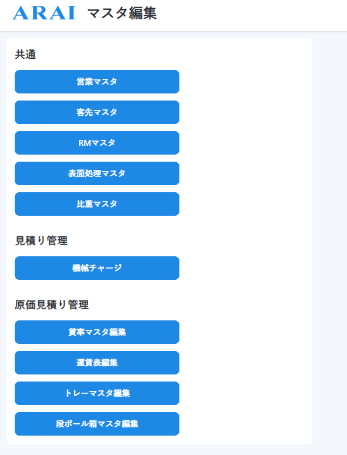
ボタンを押すと、それぞれのマスタ編集画面へ移動します。
| 区分 | ボタン | 内容 |
|---|---|---|
| 共通 | 営業マスタ | 営業担当の一覧・編集 |
| 客先マスタ | 客先情報の一覧・編集 | |
| RMマスタ | RM区分の数値を編集（操作はRMマスタ） | |
| 表面処理マスタ | 表面処理の一覧・編集 | |
| 比重マスタ | 材種・比重の一覧・編集 | |
| 見積り管理 | 機械チャージ | 機械チャージの一覧・編集 |
| 原価見積り管理 | 賃率マスタ編集 | 工程ごとの賃率を編集 |
| 運賃表編集 | 運賃表を編集 | |
| トレーマスタ編集 | トレーの一覧・編集 | |
| 段ボール箱マスタ編集 | 段ボール箱の一覧・編集 |
マスタの編集方法（営業マスタの例）
一覧のコード／IDをクリックして下部の入力欄に読み込み、保存または削除します。
客先・表面処理・比重・機械チャージなど、一覧付きのマスタも同じ操作です。
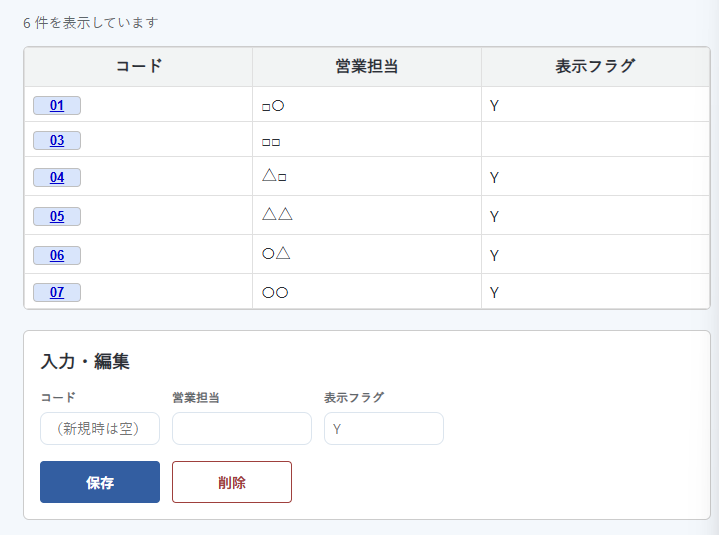
| 項目 | 内容 |
|---|---|
| 一覧 | 登録済みデータを表示。件数メッセージが上部に出る |
| コード・ID列 | クリックすると、その行を下の入力・編集欄へ読み込む |
| コード（入力欄） | 新規時は空のままにする（保存時に自動採番）。既存編集時は読み込んだコードが入る |
| 営業担当・表示フラグなど | 各マスタ固有の項目。表示フラグが「Y」のものが画面の選択肢に出る |
| 保存 | 確認後に登録／更新する。新規は「登録しますか？」、既存は「保存しますか？」 |
| 削除 | コードが入っているときのみ可。確認後に削除する |
新規登録
コード欄を空のまま、営業担当と表示フラグを入力して「保存」します。
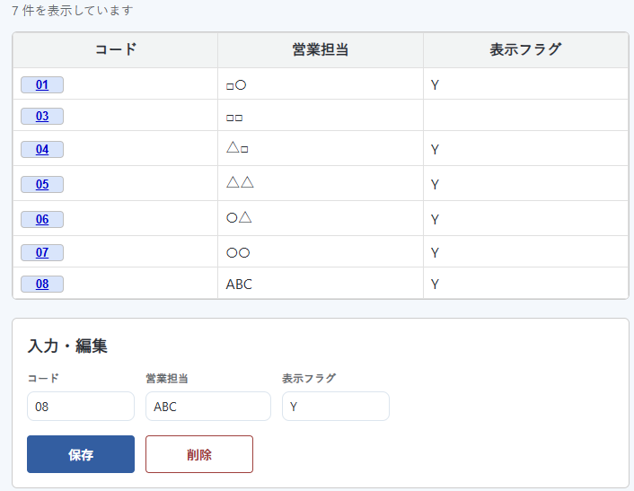
一覧から読み込み
コード列をクリックすると、入力・編集欄に反映されます。
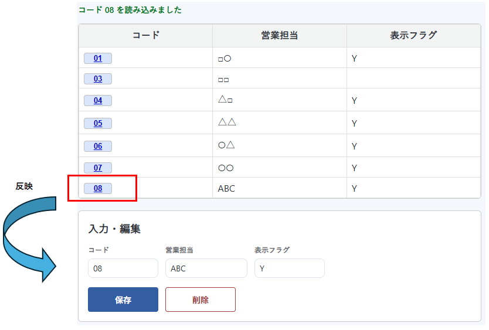
変更
読み込んだ内容を直し、「保存」で一覧へ反映します。
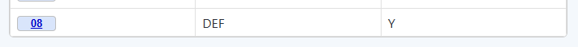
削除
対象を読み込んだ状態で「削除」を押します。確認ダイアログで「はい」を選ぶと削除されます。
コードが空のときは削除できません。
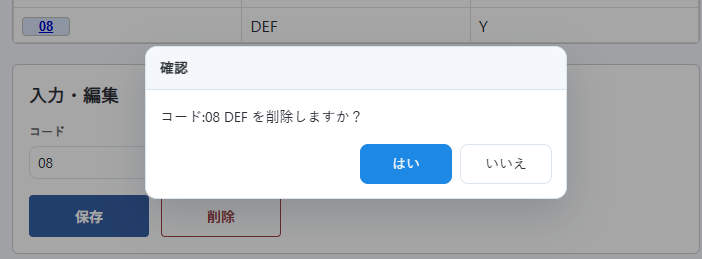
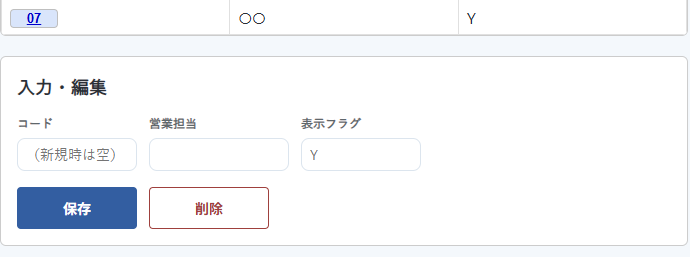
RMマスタ
RMマスタは1件固定のため、一覧・追加・削除はありません。値を直して保存するだけです。
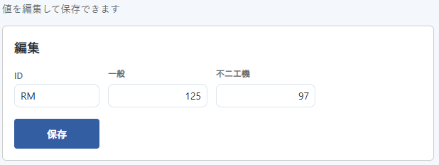
| 項目 | 内容 |
|---|---|
| ID | 「RM」で固定（読み取り専用） |
| 一般／不二工機 | 数値を編集する（真鍮詳細のRM区分などで使用） |
| 保存 | 確認後に上書き保存する（新規追加や削除ボタンはない） |